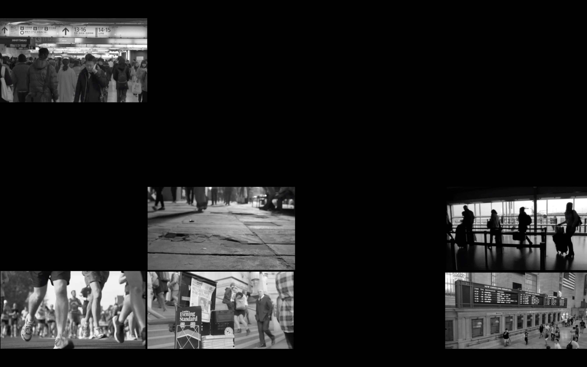

tunapark
tunapark
Back
About
Projects
tunapark
Back
About
Tuna Park is a media and performance artist,
making films, performances and computing music.
Life is interesting with art and technology.
Experience
Video
Theater
Max/MSP
Composing
Photography
Curating
tunapark
Projects
Projects
About
voiddraw
journey
denying
table
gutter
bedroom
theater
Learn more
Recent work:
'voiddraw()' media performance, group exhibition in Karts.
Max/MSP, Jitter, Dance
Learn more
voiddraw
Learn more
journey
Learn more
denying
Learn more
table
Learn more
gutter
Learn more
bedroom
Learn more
love and money
tunapark
Close
Voiddraw()
2019
Performed at Immersive Hall, Exhibited at Seongbuk Young Art Space
Max/MSP, Jitter, Modern Dance
Dancer : Sooyoung Park, Jiyoung Park
Used computer programming to create and mix the realtime imagery and sounds.
Designed an engine that random buildings and sounds to express a virtual city that is under development.
The imagery used in the show captured an urban scenery of buildings and streets.
The slides were projected on the wall and floor for two choreographer-dancers dancing through the imagery.
Next project
tunapark
Close
Journey
2018
Performed at Immersive Hall
Unity, Processing, Video, Joystick
Created with Donny Kim
"We are all cast into a strange world."
Every moment we constantly search for the meaning of our existence, and we strive to achieve it with something else as a goal. We think we are the subjects of our respective lives, and everything is a game or novel that I can go in the direction that I want to go by our choice. In fact, we are living with one eye, not all of them.
The moment we realize we can't do anything in our own direction, we feel the fear of ignorance. It also appears in the form of anxiety, emptiness, emptiness, depression, irritation, and meeting.
After all, what we can see is that we are just one of the beings thrown into the world, leaving on our own an unstoppable journey. Soon, You become aware that you are a small, helpless, and cast off.
Next project
tunapark
Close
Denying : Undefined
2018
Exhibited at 2018 ATC
Photography, Performed video
Created with Seoyeon Park
"We are undefinable. Sometime we are also denying ourselves."
We differ depending on the situation we face, the person we meet, etc. We are confused about what we really look like in our various aspects, and we wonder if all the identities we see are ourselves.
In this work, we tried to relate 'clothes' and 'identities'. There is an expression 'changing clothes' means changing ourselves to others. We had taken a lot of photos of various people with particular concept one person by person.
After all, we wanted to say that all people in the photography are maybe same person.
Next project
tunapark
Close
Table
2018
Performed at Immersive Hall
Projection mapping, Processing, Video, Installation
Created with Donny Kim
"Our eyes and our records are only in the form of consumption."
How do we look at me and you and the things around us? Don't you think the glances, words, and records around us that come and go end up with consumption? There is one table and chair on which the plate is placed, and a larger table on the opposite side of it, a large object covered with white cloth on the table. Visitors are in a situation where they are forced to eat something when they approach the table.
A scene of the video projected.
The plates are strewn with different pictures of the front and the back, and the table is lit up with a flicker of light every five seconds. At the table, the sound of eating and taking pictures can be heard in time for the beat and lighting to be turned on.
Facing a sculpture that only reveals a shape, a mosaic image is mapped on the fabric that covers it. News and interviews are heard in turn, and the images become clearer and clearer. The situation of eating something, and the seemingly obvious video represents our view of social issues and controversies.
Next project
tunapark
Close
Gutter
2018
Assignment at Immersive Hall
Sound design
Sound design for a video.
Making sounds that I want exactly is hard. Making my own synthesizer to design the sound.
Next project
tunapark
Close
Bedroom
2018
Performed at Immersive Hall
Real time camera recording, Processing, Video, Installation
Created with Donny Kim
It is about "modern people’s anxiety about rest."
The audience feels uneasy about the ever-increasing sound and the intense light that penetrates the eyes, contrary to the expectation that it will be comfortable and cozy even if they lie in bed and close their eyes. But after the lights and sounds are gone, the audience realizes that it was an illusion after all the time.

A scene of the video projected.
This is a work in which the action of the audience is used as an interaction. Before the audience lay on the bed, they expressed the room using the front and floor screens, and CCTV screens appear everywhere on the front and floor screens after the audience lies down.
The screen contains other people's daily lives. One of the screens is broadcast live by a lying visitor. The screens quickly change their eyes and they look at the audience lying on the bed. The grotesque and disturbing sound rages, then suddenly all the screens go out and return to the original room with fade-in-out.
Next project
tunapark
Close
Love and Money
2019
Performed at Immersive Hall
Play, Realtime recording video
Theater Ulchoo
The original production of Love and Money by Dennis Kelly played at the Royal Exchange, Manchester before it transferred to the newly opened Young Vic Maria studio in 2006 and was directed by Matthew Dunster.
An examination of how love is destroyed by materialism told backwards from a man describing the murder of his wife to escape debt until the play ends with his wife's excitement following his proposal.
I played "Val", an old friend of David's who he has to beg for a job.
Before participating in the play, I used to worked in film recording, video shooting and editing.
While trying to act for the first time, I tried to become an better performer through training such as vocal training, theater analysis and character building for about two months.
It was my first play as a performer.
Our play was performed at Immersive Hall, in June 7th to June 8th (17:00 and 19:00) and all the seats were sold out.
After this play, I got a technical assistant job at Mary Hall, where popular plays and performances are held.
Next project